Chapter 1 Model choice
In this chapter we looked for the best model shape based on quality of fit, cross-validation (LOO), and prediction (RMSEP).
1.1 Data
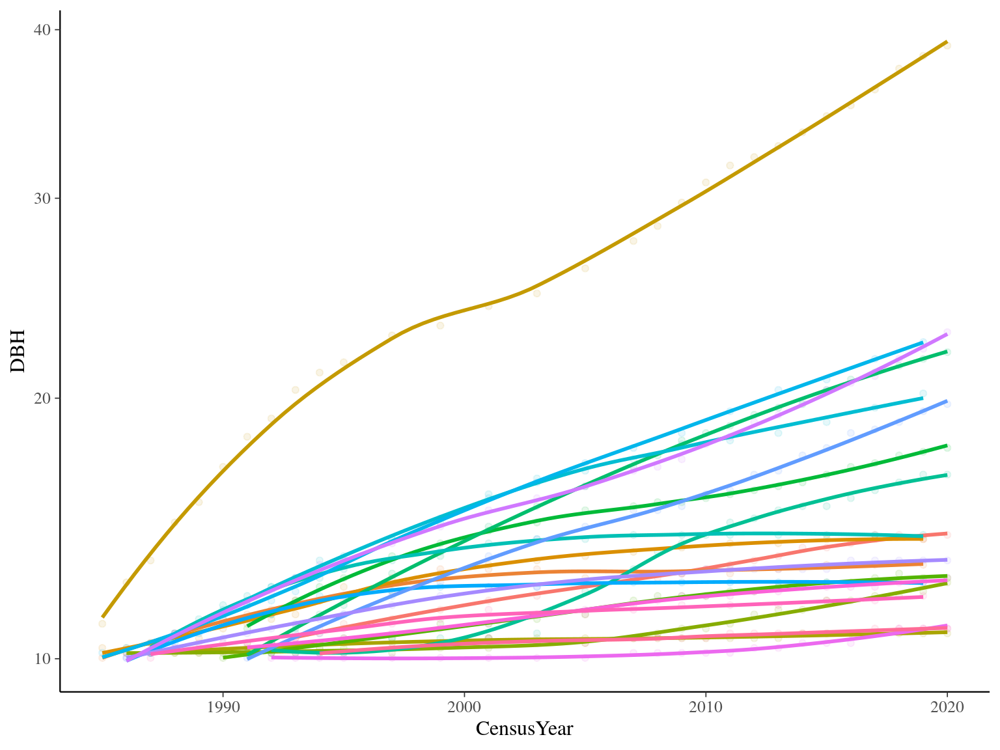

1.2 Michaelis Menten 1
Using time \(t\) since recruitment (DBH=10cm) for each individual tree \(i\):
\[DBH_{i,t} \sim \mathcal N (10 + \frac{\alpha_i \times t}{\beta_i+t}, \sigma)\]

1.3 Michaelis Menten 2
Using time \(t\) since recruitment (DBH=10cm) for each individual tree \(i\):
\[DBH_{i,t} \sim \mathcal N (10 + \frac{1}{\frac{1}{\alpha_i} + \frac{1}{\gamma_i \times t}}, \sigma)\]
1.4 Gompertz
Using time \(t\) since recruitment (DBH=10cm) for each individual tree \(i\):
\[DBH_{i,s,t} \sim \mathcal N (DBH_{i,t-i} + Gmax_i \times exp(-\frac12.[\frac{log(\frac{DBH_{i,t-i}}{100.Dopt_i})}{Ks_i}]^2)\times\Delta t, \sigma)\]
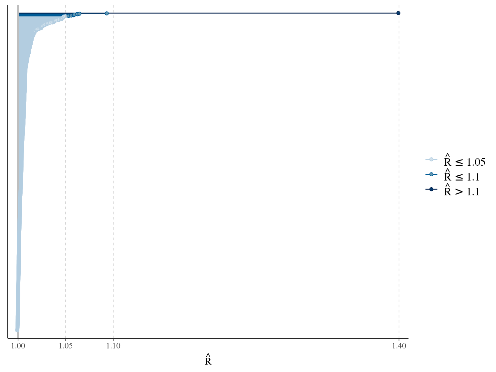


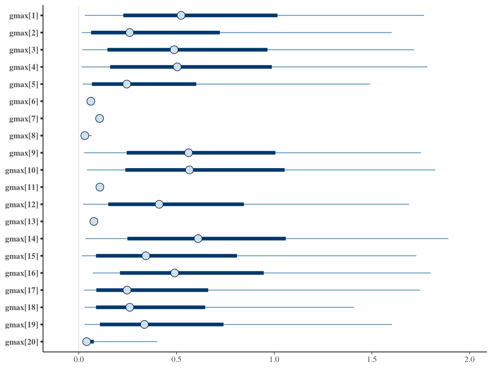
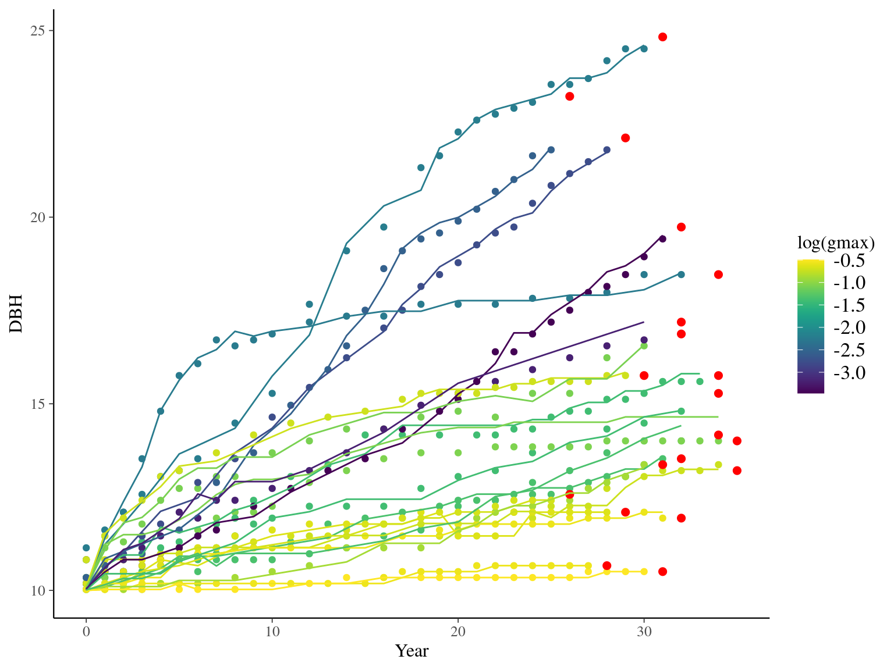
1.5 Lognormal
Using time \(t\) since recruitment (DBH=10cm) for each individual tree \(i\):
\[DBH_{i,t} \sim \mathcal N (10 +\beta \times log(t), \sigma)\]
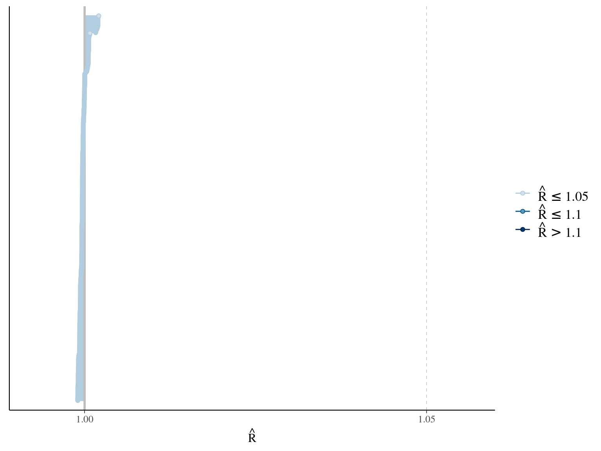
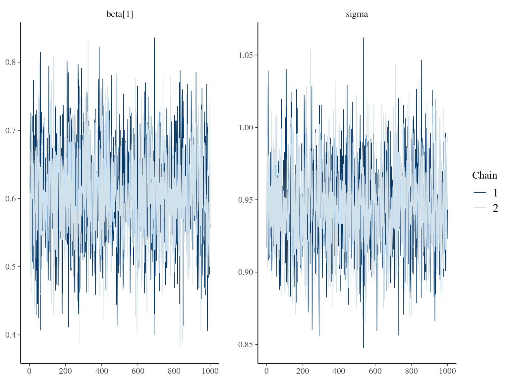

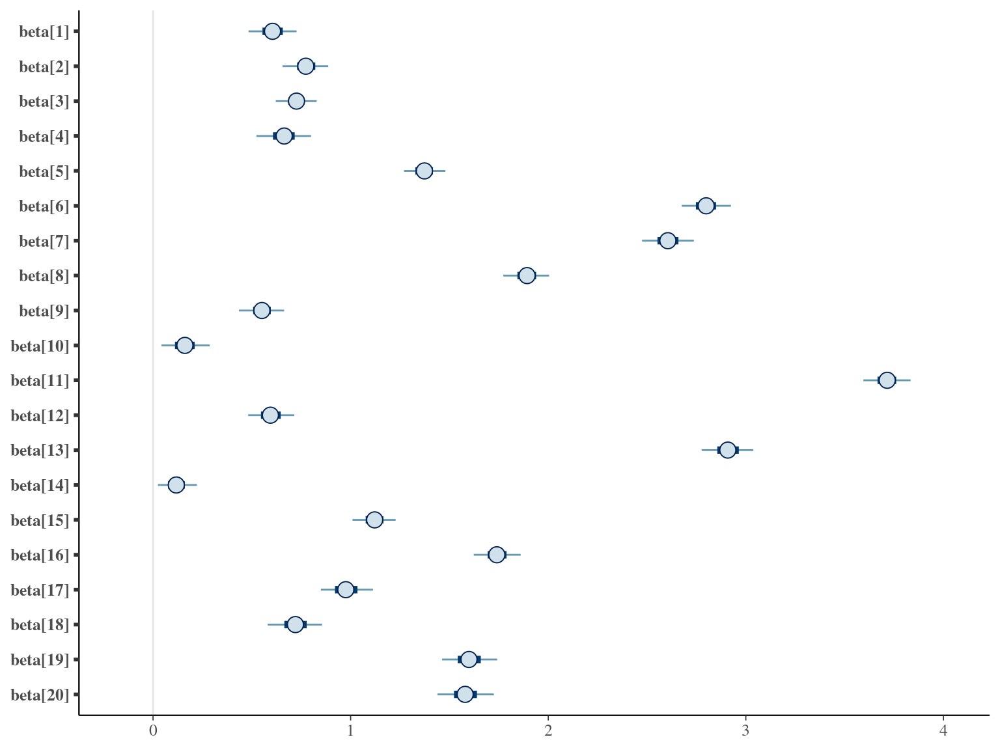
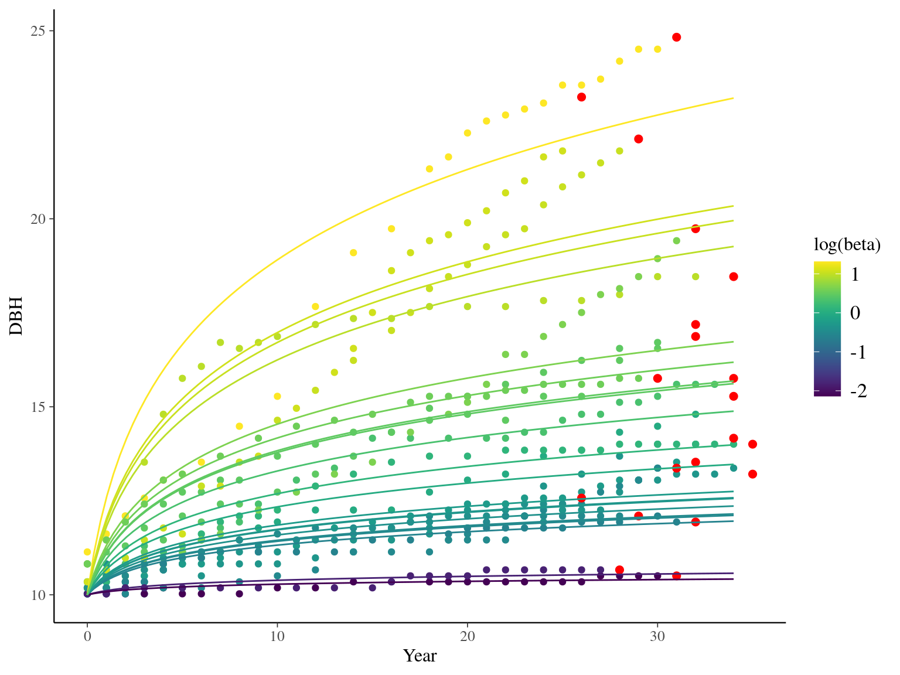
1.6 Polynomial
Using time \(t\) since recruitment (DBH=10cm) for each individual tree \(i\):
\[DBH_{i,t} \sim \mathcal N (\alpha \times t^3 + \beta_i \times t^2+ \gamma_i \times t + 10, \sigma)\]


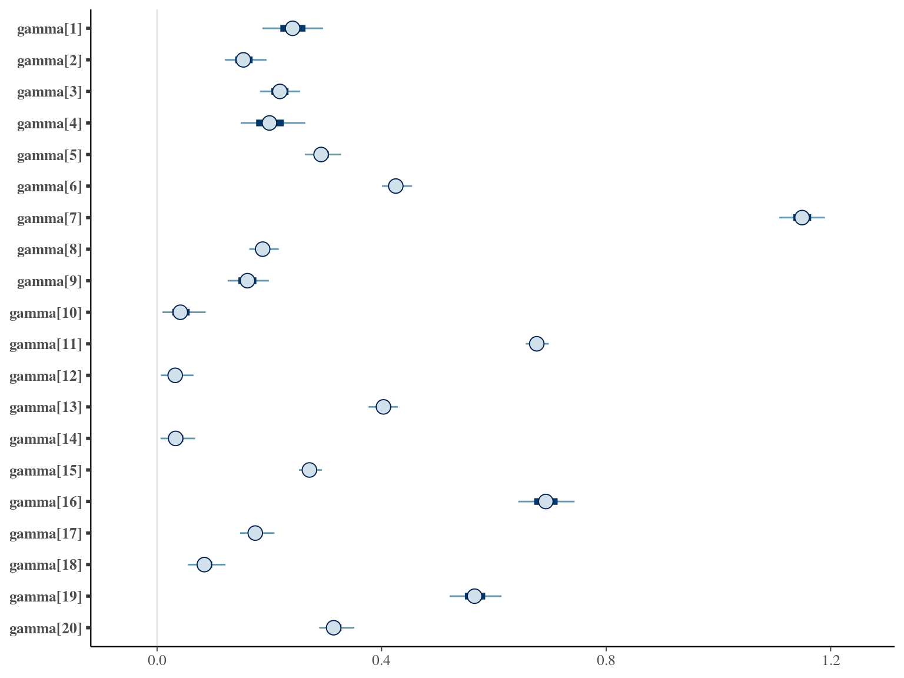
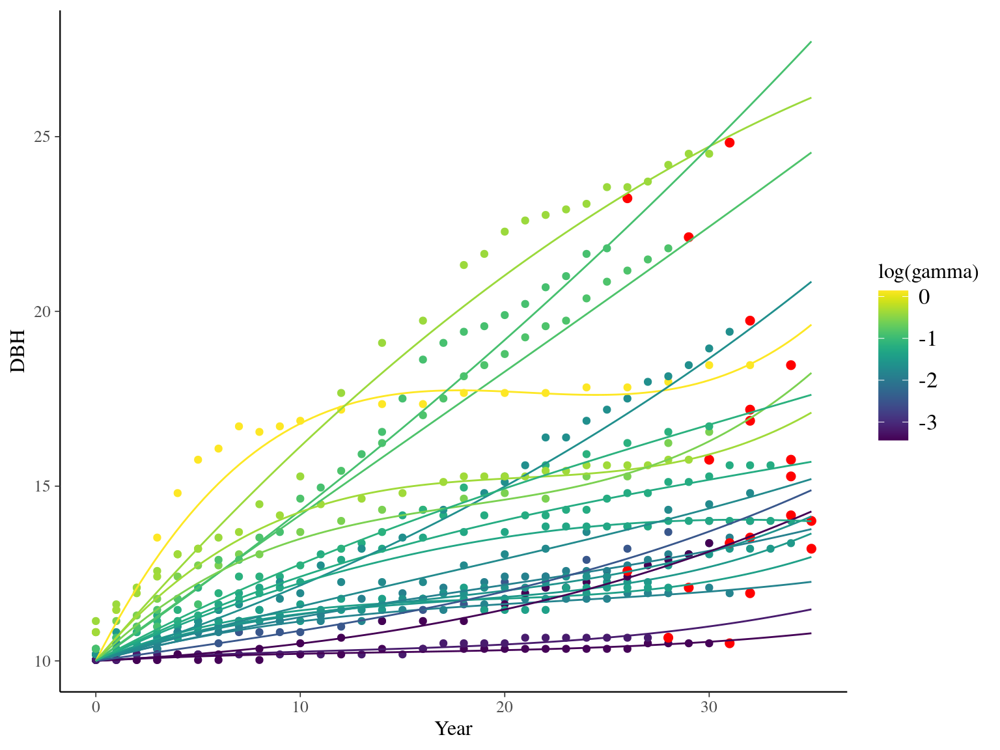
1.7 Weibul
Using time \(t\) since recruitment (DBH=10cm) for each individual tree \(i\):
\[DBH_{i,t} \sim \mathcal N (10 + \alpha \times (1 − e^{-t_i/\beta}) , \sigma)\]
1.8 Amani
Using time \(t\) since recruitment (DBH=10cm) for each individual tree \(i\):
\[DBH_{i,t} \sim \mathcal N (\alpha \times (1 − e^{-\lambda \times (\frac{t_i}{\theta})^\beta}) , \sigma)\]
1.9 Gompertz sum
Using time \(t\) since recruitment (DBH=10cm) for each individual tree \(i\):
\[ DBH_{t,i} \sim \mathcal N (10 + gmax_i \times \sum _{y=0} ^{y=t} exp(-\frac12.[\frac{log(\frac{DBH_{t,i}}{100.Dopt_i})}{Ks_i}]^2)), \sigma)\]

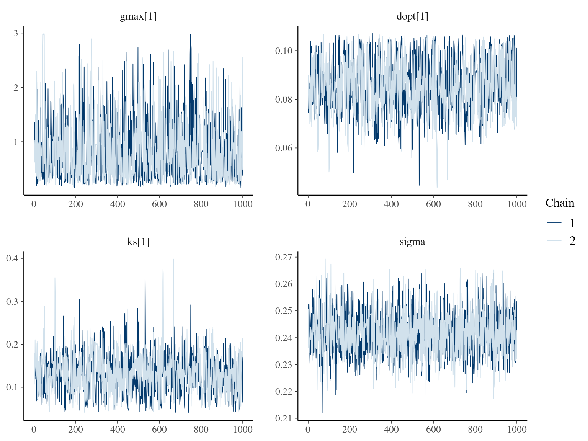


1.10 Gompertz sum 2
Using time \(t\) since recruitment (DBH=10cm) for each individual tree \(i\):
\[ DBH_{t,i} \sim \mathcal N (10 + gmax_i \times \sum _{y=0} ^{y=t} exp(-\frac12.[\frac{log(\frac{DBH_{t,i}}{100.Dopt_i})}{Ks_i}]^2)), \sigma)\]

1.11 Gompertz sum 3
Using cmdstanr.
Using time \(t\) since recruitment (DBH=10cm) for each individual tree \(i\):
\[ DBH_{t,i} \sim \mathcal N (10 + gmax_i \times \sum _{y=0} ^{y=t} exp(-\frac12.[\frac{log(\frac{DBH_{t,i}}{100.Dopt_i})}{Ks_i}]^2)), \sigma)\]
1.12 Gompertz sum 4
Using cmdstanr and reduce_sum for parralelisation.
Using time \(t\) since recruitment (DBH=10cm) for each individual tree \(i\):
\[ DBH_{t,i} \sim \mathcal N (10 + gmax_i \times \sum _{y=0} ^{y=t} exp(-\frac12.[\frac{log(\frac{DBH_{t,i}}{100.Dopt_i})}{Ks_i}]^2)), \sigma)\]
1.13 Comparisons
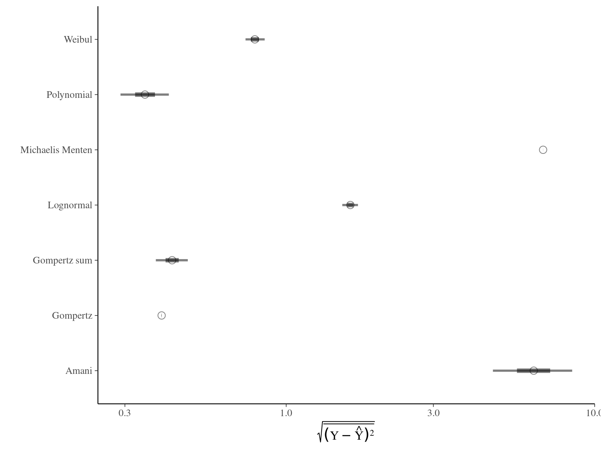
| elpd_diff | se_diff | elpd_loo | se_elpd_loo | p_loo | se_p_loo | looic | se_looic | |
|---|---|---|---|---|---|---|---|---|
| Gompertz | 0.000000 | 0.000000 | 252.5768 | 5.297475 | 3.707155 | 0.1762043 | -505.1535 | 10.59495 |
| Gompertz sum 3 | -3.353666 | 5.580909 | 249.2231 | 5.118095 | 4.638442 | 0.1742171 | -498.4462 | 10.23619 |
| Gompertz sum 4 | -3.501480 | 5.576029 | 249.0753 | 5.114114 | 4.696683 | 0.1790171 | -498.1506 | 10.22823 |
| Gompertz sum 2 | -3.736661 | 5.576073 | 248.8401 | 5.114695 | 4.670876 | 0.1768954 | -497.6802 | 10.22939 |
| Gompertz sum | -14.808735 | 5.659101 | 237.7680 | 5.346394 | 4.706502 | 0.1766864 | -475.5360 | 10.69279 |
| Polynomial | -24.480108 | 5.929703 | 228.0967 | 5.071009 | 5.276272 | 0.1798597 | -456.1933 | 10.14202 |
| Michaelis Menten 2 | -26.205735 | 6.521274 | 226.3710 | 5.386964 | 3.609515 | 0.1349292 | -452.7420 | 10.77393 |
| Lognormal | -28.691175 | 7.186175 | 223.8856 | 5.273457 | 2.125079 | 0.0730310 | -447.7712 | 10.54691 |
| Michaelis Menten 1 | -38.408940 | 7.045362 | 214.1678 | 5.445341 | 2.822001 | 0.0934159 | -428.3356 | 10.89068 |
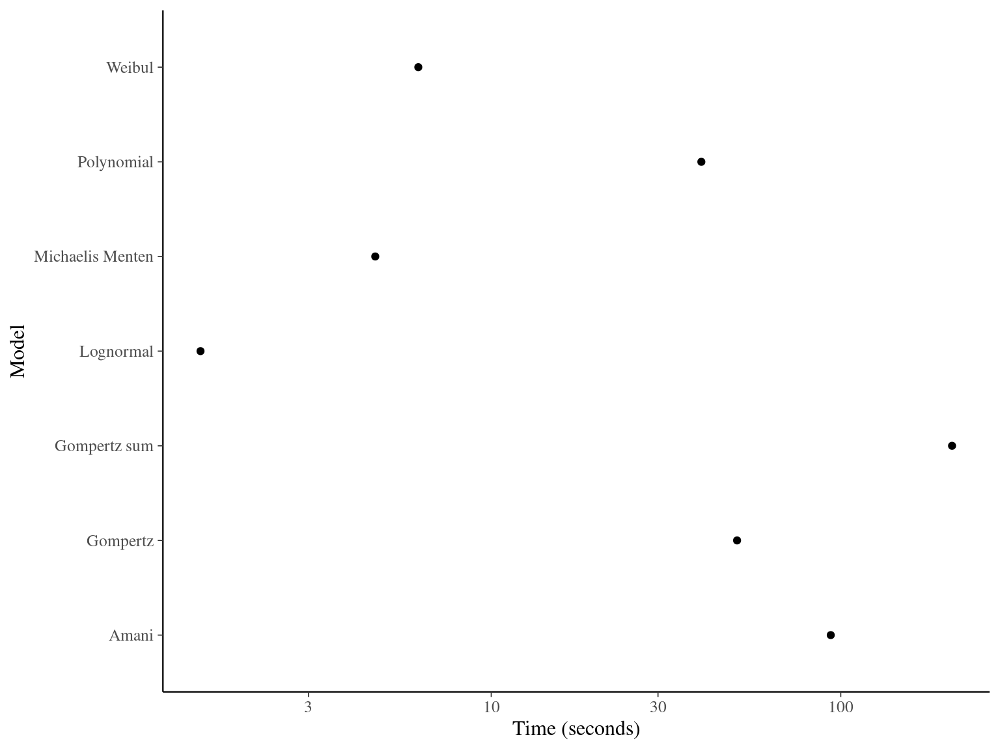